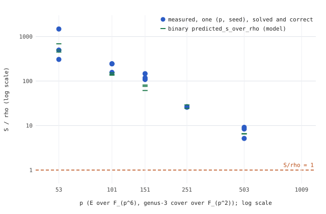

Status: interim. The study’s main run
(../../run.sh) was still running when this report was made:
later runs (p = 1009) were in progress, and the agent’s fit tool
(../../fit/) had not yet written the slope fit. A final
report replaces this one in the same PR. Protocol: ../../PROTOCOL.md, frozen
before the main run.
Scope: the jv_cover genus-3 cover of E(F_{p^6}) over
F_{p^2}, full rational 2-torsion, weak class only. This is not a
statement about prime-order or generic curves.

Figure. Each blue point is one measured (p, seed)
--exp dlp run, with the binary’s s_over_rho
field as recorded. Green ticks are the binary’s own
predicted_s_over_rho (model). The dashed line is S/rho = 1.
Source data: data.csv, from
../../results/dlp_p*_s*.json. Layout only:
plot.py.
| p | subgroup bits | S/rho, per seed (as recorded) |
|---|---|---|
| 53 | 32.4 | 495.8 · 305.7 · 1476.6 |
| 101 | 37.9 | 156.3 · 243.5 · 244.6 |
| 151 | 41.4 | 108.2 · 146.3 · 117.9 |
| 251 | 45.8 | 26.5 · 25.7 · (seed 3 killed, exit 137,
recorded in results/walls.txt) |
| 503 | 51.8 | 9.10 · 5.13 · 8.35 |
Notes: - At p ≤ 251 the recorded ratio uses each record’s own 16-run
rho mean. At p = 503 it uses --rho-ref 1.3. The protocol’s
primary comparison uses the pooled rho mean over p ≤ 251 for every
point, and that recomputation and the fit belong to the final report. -
Every S/rho here is a weight-0 lower-bound comparison (AGENTS.md §5a).
No ranking of cover against rho is made, and no point is below 1. -
Observation only: the recorded ratio falls by about two orders of
magnitude from p = 53 to p = 503. Slope, interval and the extrapolated
p* are left to the protocol’s fit.